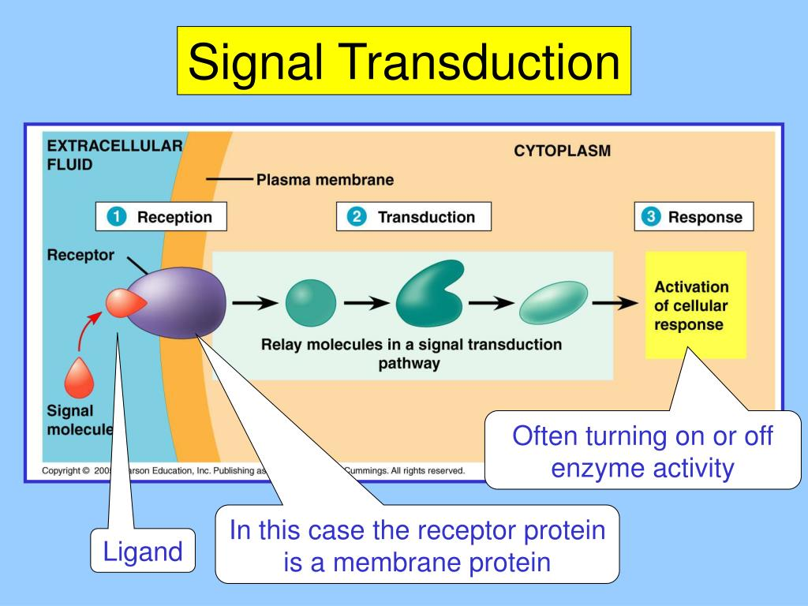

Signal Transduction Pathway
Overview: Signal transduction transforms a signal into varying cellular responses. The three main steps are:
1. Reception (Ligand Binding): A signaling molecule (ligand) binds to a specific receptor on the cell surface or inside the cell. This changes the receptor’s shape and activates it.
2. Transduction (Signal Cascade): The activated receptor triggers a chain reaction of events inside the cell. This often involves second messengers like cAMP or cGMP and protein kinases to amplify the signal.
3. Response (Cellular Action): The cell responds to the signal by altering its behavior, such as activating enzymes, opening ion channels, or changing gene expression.
Diagram: ▼
Nitric Oxide Example in Runners:
During a run, endothelial cells in blood vessels sense increased physical activity and release nitric oxide (NO). NO diffuses into surrounding smooth muscle cells, activating guanylate cyclase (sGC). This enzyme increases cyclic GMP (cGMP) levels, causing the muscles to relax and the blood vessels to dilate. This enhanced blood flow delivers more oxygen and nutrients to working muscles, helping runners maintain endurance and reduce fatigue.